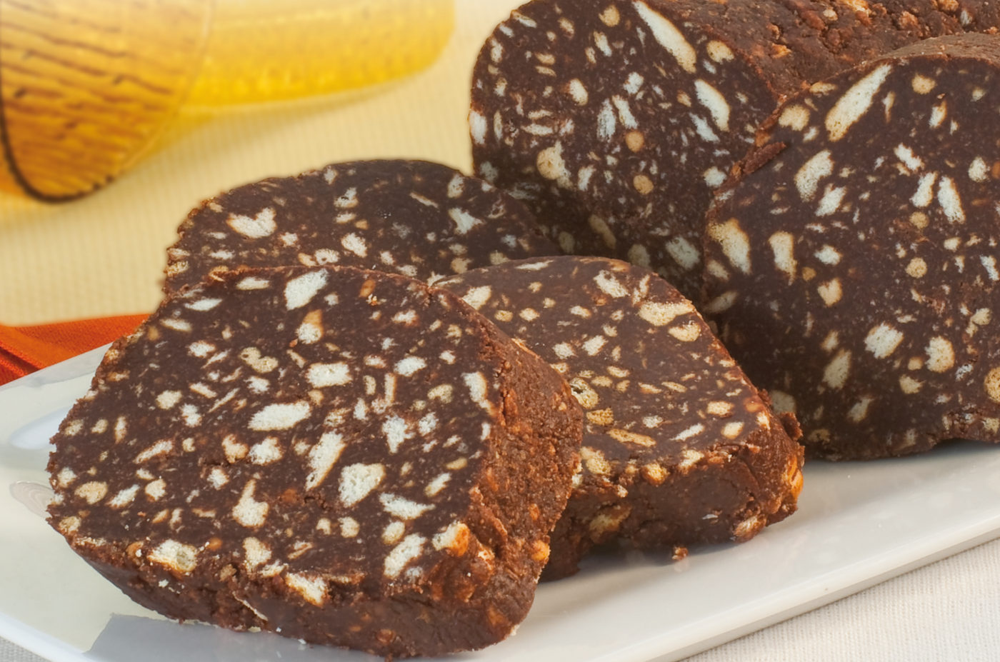

Salame al Cioccolato

Presentazione
Con cioccolato, biscotti, uova, burro e cacao si può realizzare uno dei dolci senza forno e senza cottura più amati della cucina casalinga:
il salame di cioccolato! Chiamato anche salame turco o salame vichingo a seconda della regione d'Italia, deve il suo nome alla somiglianza
con un vero e proprio insaccato sia per la forma che per la copertura bianca, realizzata con zucchero a velo.
Ingredienti
- Cioccolato fondente 200g
- Uova 2
- Biscotti secchi 250g
- Cacao amaro in polvere 10g
- Burro 150g
- Zucchero a velo 70g
- Rum 30g
Preparazione
- Per preparare il salame di cioccolato come prima cosa tritate finemente il cioccolato fondente, trasferitelo in una ciotola e scioglietelo in microonde, o a bagnomaria. Lasciatelo intiepidire e nel frattempo spezzettate i biscotti secchi con le mani, non dovranno risultare troppo grandi, ma nemmeno polverizzati.
- A questo punto in un'altra ciotola versate il burro a temperatura ambiente e lavoratelo con una spatola per ammorbidirlo. Aggiungete lo zucchero a velo.
Mescolate sino ad ottenere una crema omogenea, poi incorporate il cioccolato ormai a temperatura ambiente e mescolate bene con la spatola.
Versate anche le uova e mescolate. Aggiungete quindi anche il rum.
Mescolate ancora, poi setacciate il cacao all'interno del composto e mescolate sino ad ottenere un impasto omogeneo.
- Versate i biscotti all'interno e mescolate ancora sino a che non sarà ben amalgamato. Trasferite il composto ottenuto su un foglio di carta forno.
Modellatelo con le mani sino ad ottenere un salsicciotto, dalla forma allungata. Poi trasferite il salame su un foglio di pellicola e arrotolatelo, chiudendo bene anche le estremità. Questo vi permetterà di ottenere una forma più precisa.
- Trasferite il salame di cioccolato in frigorifero per almeno 3 ore, per ottenere una forma più rotonda noi lo abbiamo posato su una teglia per cuocere le baguette. Trascorse le 3 ore eliminate la pellicola, spolverizzatelo con zucchero a velo e tagliatelo a fette. Il salame di cioccolato è pronto da servire!
Home